n_points = 1000

n_points = 500
Hongyi (Sam) Dong
In this section, I directly optimized voxel, point-cloud, and mesh representations to fit a target 3D object.
For voxels, I used binary cross-entropy with logits because each voxel represents binary occupancy.
For point clouds, I used bidirectional Chamfer distance because point clouds are unordered and there is no known one-to-one correspondence between points.
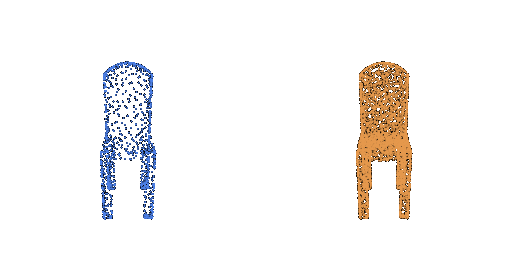
For meshes, I used Chamfer loss to match the target surface and Laplacian smoothness loss to encourage locally smooth geometry.
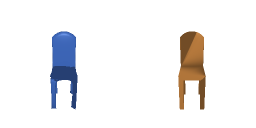
For all three representations, I use a ResNet18 image encoder to produce a 512-dimensional feature from a single RGB image. A representation-specific decoder then predicts the final 3D output.
The voxel decoder maps the 512-dimensional image feature into a
32 × 32 × 32 occupancy grid. The model is trained with binary
cross-entropy with logits.
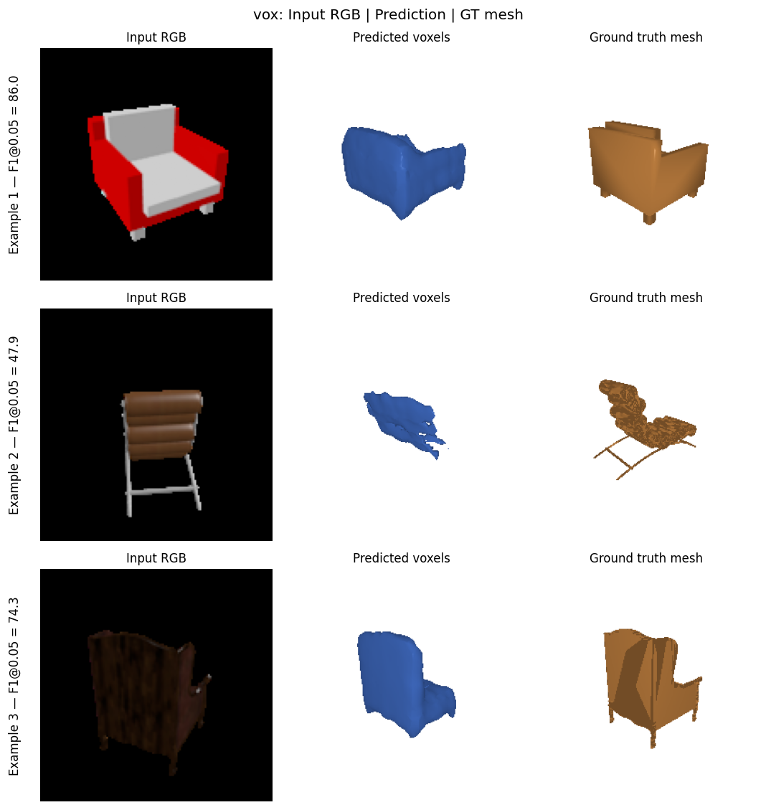
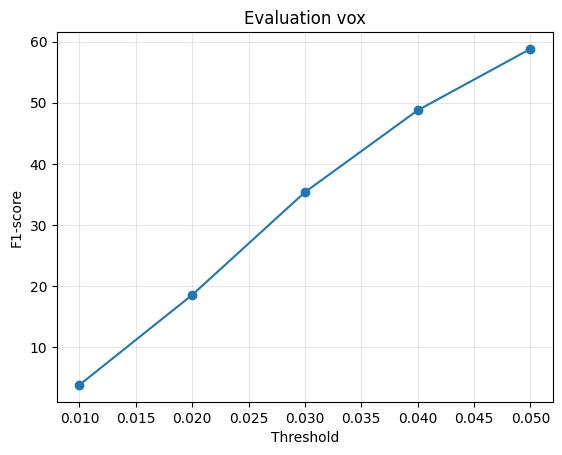
F1@0.05: 58.814
Precision@0.05: 67.264
Recall@0.05: 55.003
The point decoder maps the 512-dimensional image feature to
N × 3 point coordinates. I use Chamfer loss because the predicted
and ground-truth point sets do not have a fixed correspondence.
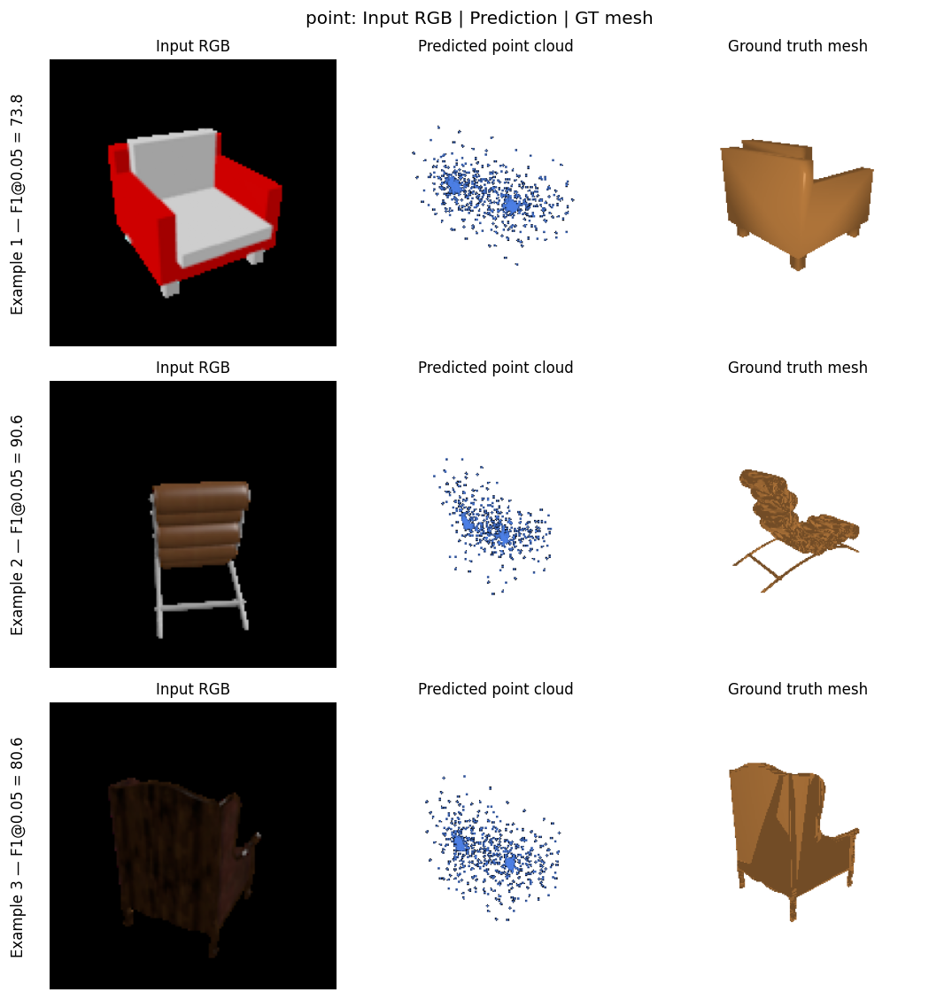
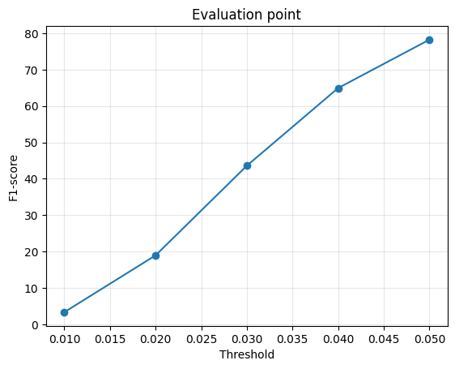
F1@0.05: 78.218
Precision@0.05: 78.775
Recall@0.05: 79.923
Although the point-cloud model obtains the highest F1 score, the qualitative predictions are still relatively diffuse. This shows that a strong point-set metric does not necessarily imply a visually clean reconstruction.
The mesh decoder starts from an ico_sphere(4) template with 2562
vertices and predicts a displacement for every vertex. I use Chamfer loss
together with Laplacian smoothness regularization.
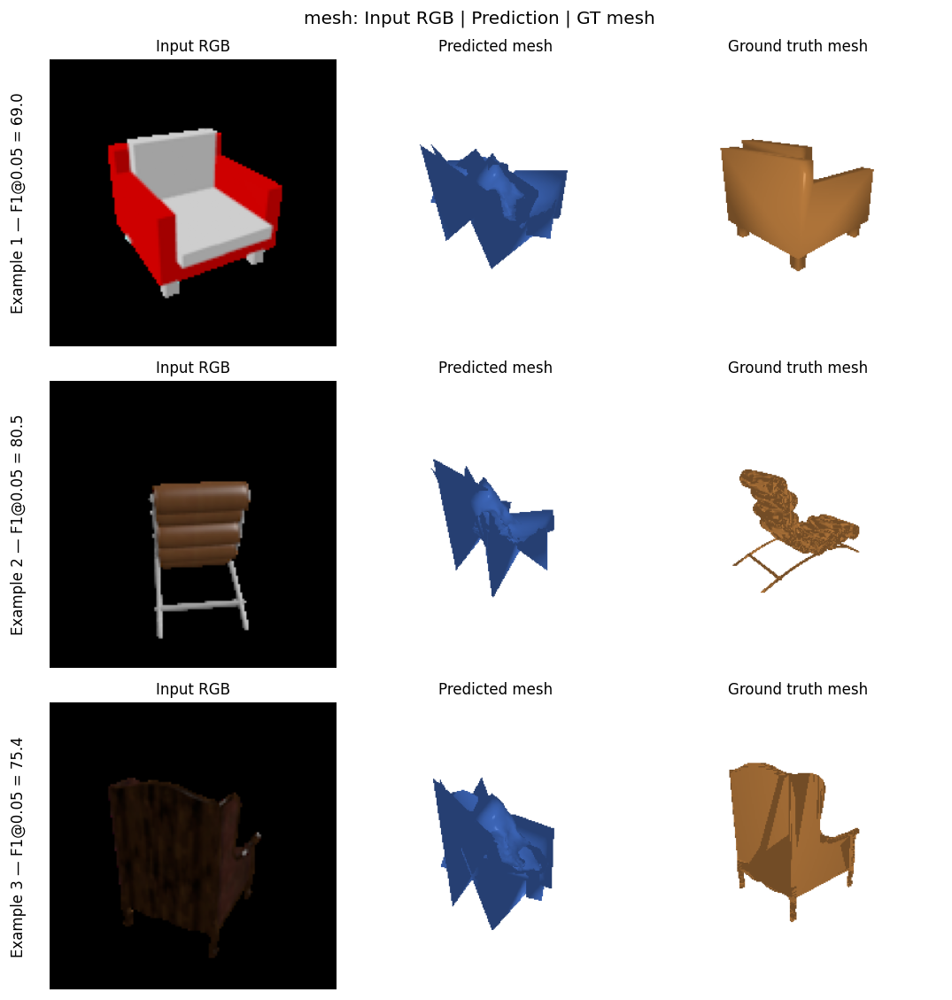
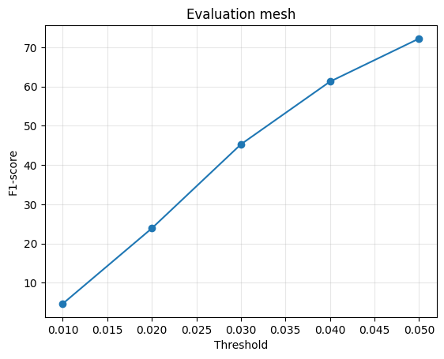
F1@0.05: 72.216
Precision@0.05: 69.566
Recall@0.05: 76.087
| Representation | F1@0.05 |
|---|---|
| Voxel | 58.814 |
| Point Cloud | 78.218 |
| Mesh | 72.216 |
The point-cloud representation obtains the highest F1 score, followed by the
mesh and voxel representations. Voxels are simple and easy to supervise, but
the fixed 32³ resolution limits geometric detail. Point clouds
provide flexible surface coverage, but they do not explicitly represent
connectivity. Meshes provide a connected surface, but fixed topology and
vertex deformation can introduce spikes and self-intersections.
I varied the number of predicted points while keeping the model architecture, optimizer, learning rate, and training budget otherwise fixed. The baseline predicts 1000 points, while the modified model predicts 500 points.
n_points = 1000
n_points = 500
| n_points | Precision@0.05 | Recall@0.05 | F1@0.05 |
|---|---|---|---|
| 1000 | 78.775 | 79.923 | 78.218 |
| 500 | 72.652 | 70.522 | 70.618 |
Reducing the number of predicted points from 1000 to 500 decreases F1@0.05 from 78.218 to 70.618, a drop of 7.600 points. With fewer points, the prediction has lower surface density and provides less complete coverage of the target geometry.
I performed an input-occlusion experiment on the trained voxel model. For the same input image, I masked the top, bottom, left, or right half of the image and compared the resulting prediction with the original prediction.
The masked region is filled with the ImageNet mean RGB value. Because the ResNet input is normalized using the same ImageNet mean, the masked area becomes zero after normalization.
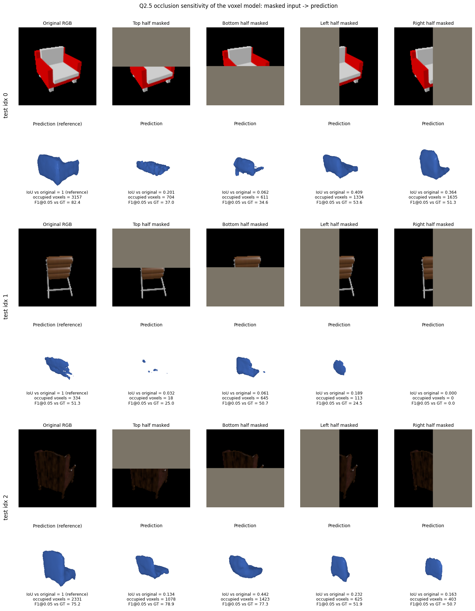
| Masked Region | Mean IoU with Original Prediction |
|---|---|
| Top | 0.1223 |
| Right | 0.1757 |
| Bottom | 0.1880 |
| Left | 0.2764 |
Masking any half of the input image substantially changes the voxel prediction. However, the most influential region is different for each test example, so these results do not indicate one consistently dominant image region. In addition, a large change in voxel occupancy does not always lead to a lower reconstruction F1, meaning that a different prediction is not necessarily a worse prediction.
This experiment measures sensitivity to a large artificial occlusion rather than semantic importance directly, so the results should only be interpreted as an input-sensitivity analysis.
I implemented an image-conditioned implicit occupancy function:
f(image feature, x, y, z) → occupancy
The ResNet18 encoder produces a 512-dimensional image feature. This feature is
concatenated with a 3D query coordinate, giving a 515-dimensional input to an
MLP with architecture
515 → 512 → 256 → 128 → 1.
During training, 4096 query points are sampled per object. During evaluation,
the network is queried over the full 32³ coordinate grid.
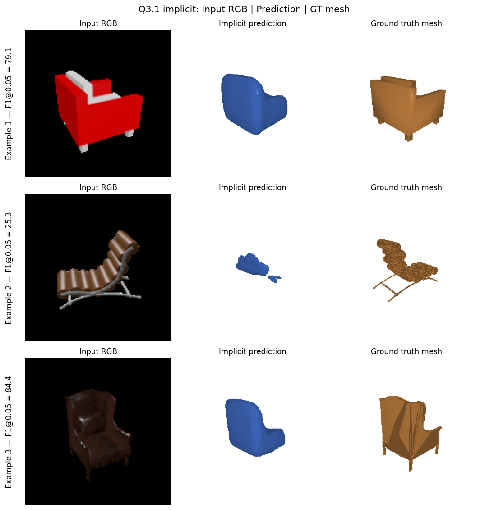
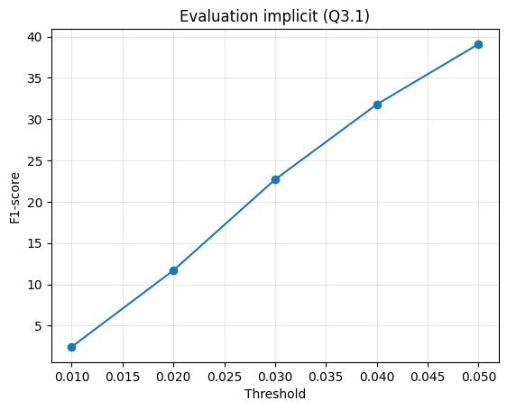
F1@0.05: 39.091
Checkpoint step: 6000
The implicit representation was more difficult to optimize than the direct voxel decoder under this training setup. At step 6000, 129 out of 678 test objects produced an empty predicted surface, resulting in a lower F1 than the direct voxel baseline.
I implemented an image-conditioned parametric surface function:
g(image feature, u, v) → (x, y, z)
The 512-dimensional image feature is concatenated with a 2D parameter
coordinate (u, v) sampled from [-1,1]². The MLP
architecture is
514 → 512 → 256 → 128 → 64 → 3.
Because the UV samples do not have known one-to-one correspondence with the target mesh points, I train the network with Chamfer loss.
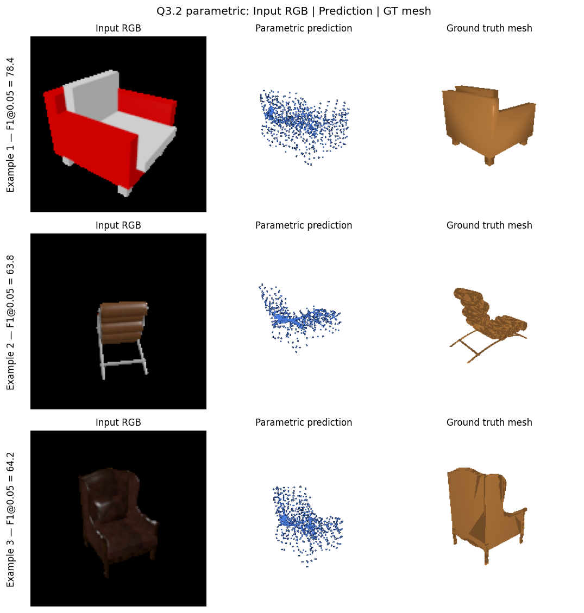
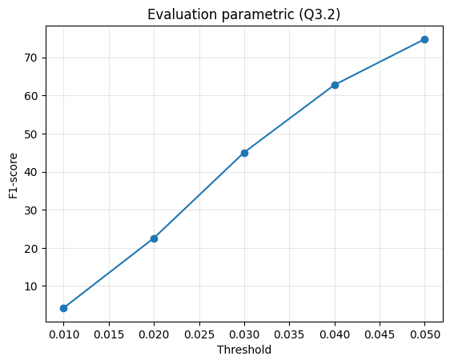
F1@0.05: 74.768
Checkpoint step: 10000
The parametric network performs substantially better than the implicit model in this experiment. One limitation is that a single 2D parameter domain has to fold in 3D to represent complex surfaces, which can create stray bridging points.
I trained the same voxel reconstruction architecture on an extended dataset containing chairs, cars, and planes.
| Class | Training Objects | Test Objects | F1@0.05 |
|---|---|---|---|
| Chair | 6100 | 678 | 37.572 |
| Car | 3146 | 368 | 30.866 |
| Plane | 3640 | 405 | 88.307 |
| Overall | 12886 | 1451 | 50.032 |
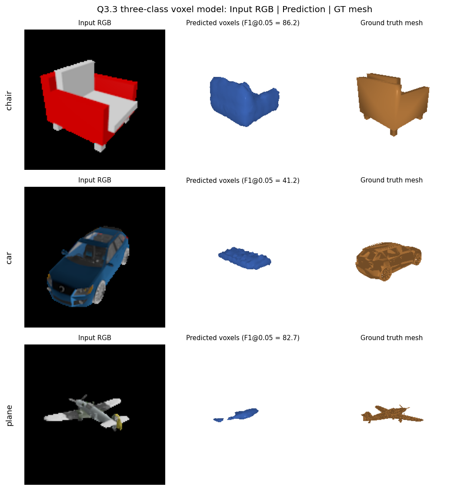
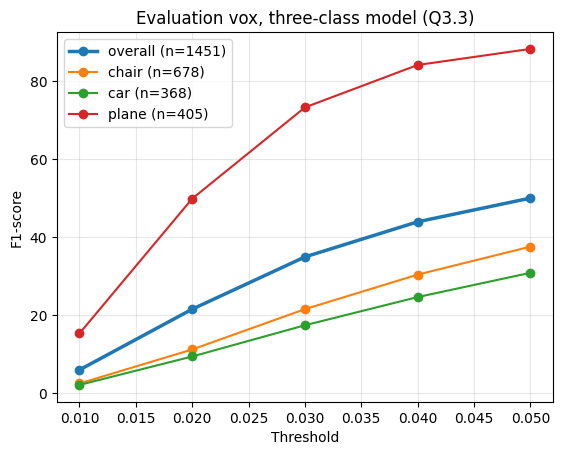
I evaluated the original chair-only model and the three-class model on the same 678 chair test objects. Both models receive the same RGB input view and are evaluated against the same ground-truth surface samples.
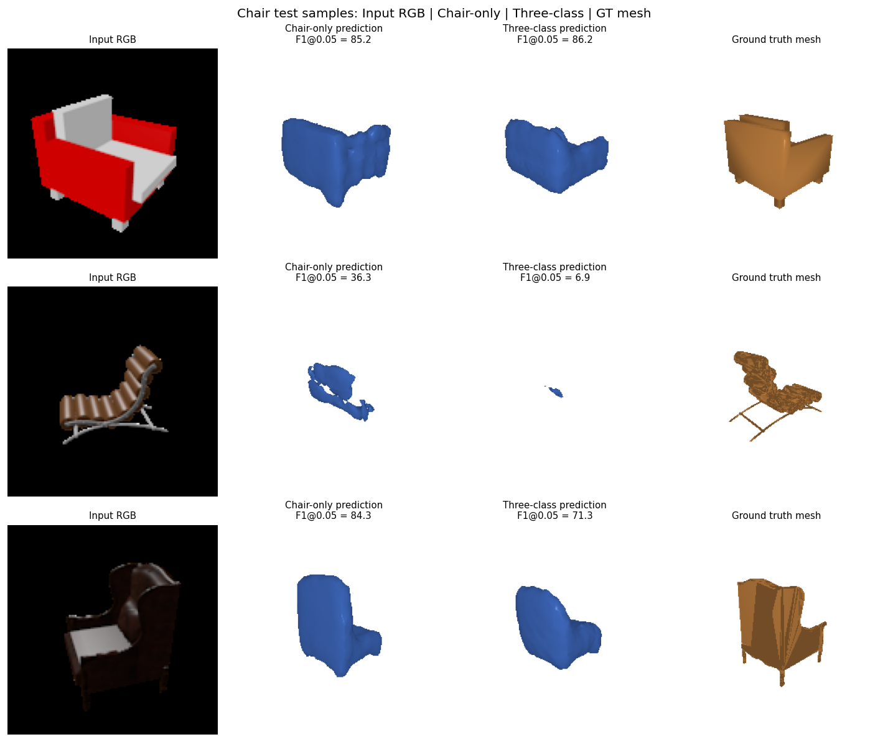
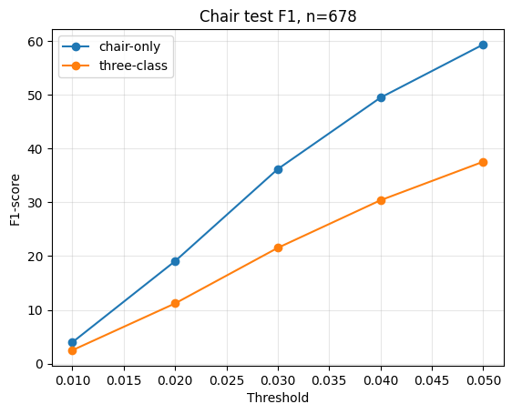
| Model | Chair F1@0.05 | Voxel IoU vs GT | Empty Predictions |
|---|---|---|---|
| Chair-only | 59.396 | 0.2499 | 7 / 678 |
| Three-class | 37.572 | 0.1546 | 91 / 678 |
On the paired chair test set, the three-class model scores 21.824 F1 points lower than the chair-only model. The three-class model performs better on 132 chair samples, worse on 541, and equally on 5.
Under the current training budget, the three-class model therefore performs worse on chair reconstruction. However, the chair-only model was trained to step 10000 while the three-class checkpoint was saved at step 2000, so this experiment does not show that multi-class training is inherently worse. Training budget is an important confounding factor.
Performance also varies substantially by category. The plane class reaches an F1@0.05 of 88.307, while chair and car reconstruction are considerably more difficult for the current three-class model.
I did not use the provided precomputed ResNet features. All experiments use
the live ResNet18 encoder (load_feat = False).
| Model | Checkpoint Step |
|---|---|
| Part 2 Voxel | 10000 |
| Part 2 Point Cloud | 2000 |
| Part 2 Mesh | 4000 |
| Q3.1 Implicit | 6000 |
| Q3.2 Parametric | 10000 |
| Q3.3 Three-class Voxel | 2000 |